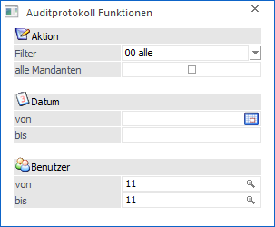
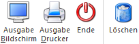

Im Funktions-Audit werden alle Aktionen berücksichtigt, die ein Benutzer im Programm ausgeführt hat, wie z.B. Initialisierungsläufe, Reorganisationsläufe, Datenchecks, Programmwechsel, Mandantenwechsel, etc.
Im Menüpunkt…
1 WinLine START
1 Optionen
1 Auditprotokoll Funktionen
… kann dieses Protokoll ausgewertet werden.

Die Ausgabe kann folgendermaßen eingeschränkt werden:
Ø Filter
Aus der Auswahlbox kann gewählt werden, ob eine bestimmte Aktion ausgewertet werden soll, oder ob alle Aktionen angezeigt werden sollen. Folgende Aktionen stehen zur Auswahl:
|
Aktion |
Beschreibung |
|
00 - alle |
Es werden alle Aktionen gedruckt |
|
01 - Login User |
Einstieg eines Benutzers in das Programm |
|
02 - Logout User |
Ausstieg eines Benutzers aus dem Programm |
|
03 - Mandantenwechsel |
Wer hat wann auf welchen Mandanten gewechselt |
|
04 - Datensicherung |
Wann wurde eine Datensicherung erzeugt |
|
05 - Datenrücksicherung |
Wann wurde eine Datenrücksicherung vorgenommen |
|
06 - System-Fehler |
Wann sind System-Fehler (Verbindung zur Datenbank verloren etc.) aufgetreten |
|
07 - Lock Init |
Löschen der Datensatzsperren |
|
08 - Audit Löschen |
Löschen des Auditprotokolles |
|
09 - Datenüberprüfung |
Datencheck |
|
10 - Jahresabschluss |
Jahresabschluss durchgeführt |
|
11 - Mandantenneuanlage |
Mandantenneuanlage |
|
12 - Berechtigungsprobleme |
Berechtigungsprüfung bei Listen etc. |
|
13 - Statistik komprimieren |
Statistik komprimieren |
|
14 - Falsche Passworteingabe |
Passworteingabe beim Login prüfen |
|
15 - Programmwechsel |
Wer hat welche Programme aufgerufen |
|
16 - Daten Initialisierung |
Wann wurden Datenbereiche gelöscht |
|
17 - Daten Reorganisieren |
Wann wurden von wem Daten reorganisiert |
|
18 - Makro gestartet |
Makroausführung Protokoll |
|
19 - Benutzeränderungen |
Änderungen der Benutzerberechtigungen, Neuanlage von Benutzern, Löschen von Benutzern, etc. |
Ø alle Mandanten
Ist die Checkbox aktiviert, so wird das Auditprotokoll von allen Mandanten gedruckt, ansonsten werden nur die Einträge des aktuell ausgewählten angezeigt.
Ø Datum von / bis
Eingrenzung der Ausgabe durch die Eingabe von Datumsgrenzen.
Ø Benutzer von / bis
Eingabe der Benutzernummern, die in der Auswertung berücksichtigt werden sollen. Diese Einschränkung kann aber nur von jenen Benutzern durchgeführt werden, die als Administrator definiert sind.
Buttons

Ø Ausgabe Bildschirm
Durch Anwahl des Buttons "Ausgabe Bildschirm" bzw. der Taste F5 wird das Auditprotokoll auf dem Bildschirm ausgegeben.
Ø Ausgabe Drucker
Durch Anwahl des Buttons "Ausgabe Drucker" wird das Auditprotokoll auf dem Drucker ausgegeben.
Ø Ende
Durch Drücken des Buttons "Ende" bzw. der ESC-Taste wird das Fenster geschlossen.
Ø Löschen
Durch Anklicken des Löschen-Buttons wird das gesamte Auditprotokoll gelöscht.
Hinweis
Der Löschen-Button wird nur Benutzern angezeigt, welche die entsprechenden Administratorenrechte haben.
Achtung
Wenn ein Administrator in das Programm einsteigt, kann die Meldung erscheinen, dass das Auditprotokoll mehr als 5000 Zeilen beinhaltet. Dies soll nur ein Hinweis darauf sein, dass danach das Auditprotokoll angesehen, kontrolliert und dann wieder gelöscht wird. Diese Meldung hindert aber nicht am Arbeiten mit den einzelnen Programmteilen.